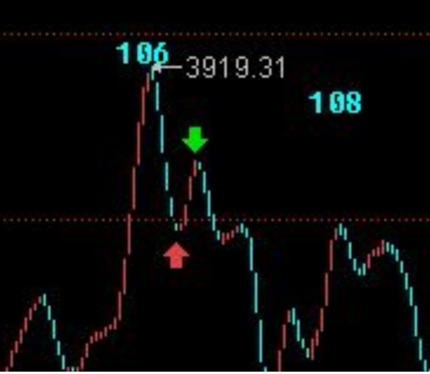
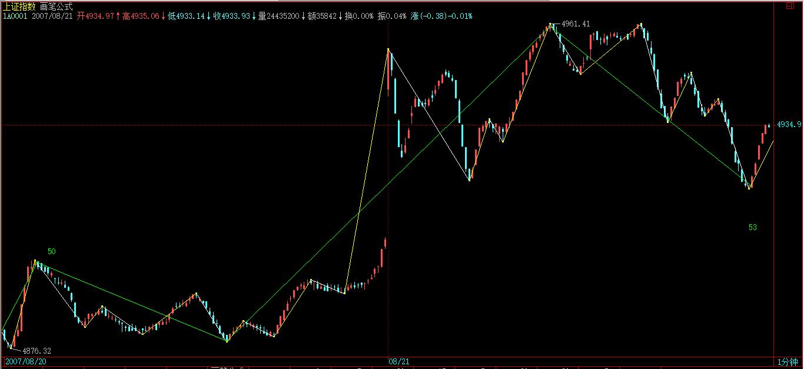
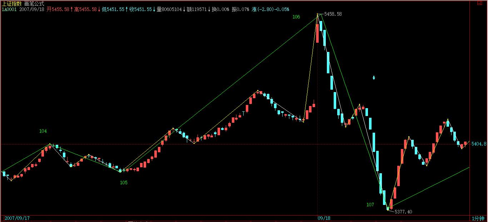
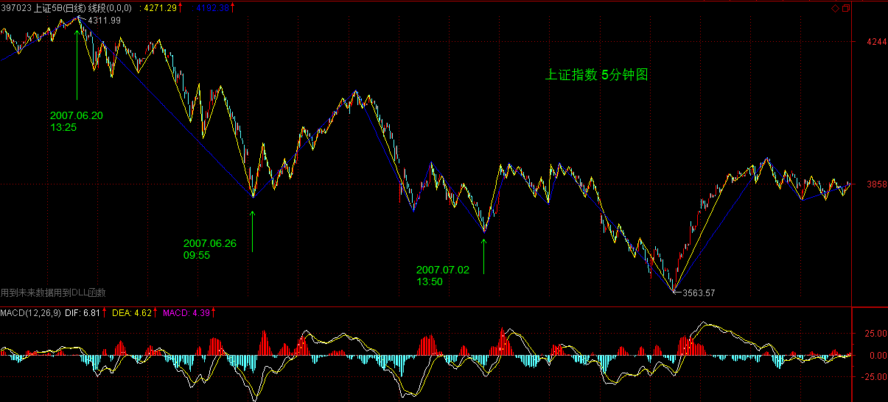

(2007-07-02 21:37:44)
现在的课已经越来越精细，特别用的是最小的1分钟，一般的理论，在这么精细、偶然性那么大的图上都要乱套了，但却恰好能显示本ID理论的有力。【韶山映山红】1分钟Ｋ线图走势的偶然性很大。】别说1分钟图，分笔图也没问题，这就是本ID理论所构筑几何结构的力量。世界都是几何的，别说那几张无聊的走势图了。
看下图，为什么下午的分段是这样？大概很少人现在就能全部搞清楚，所以，为了让各位能睡一个塌实觉，也为了免得等一下飞机万一不听话，到时候只留下各位在这里争论不休没人再给解答，所以本ID在去机场的路上用本本给各位补上一课。
【韶山映山红】缠师原图20070702A.jpg（2007-07-02 20:17）】
106到107这一段箭头所指的那一笔，用的是取整的前提，所以，只要你仔细去分析，就知道那一定是一笔。
这个问题，本ID瞧了一下，见一位叫快乐vs菜虫的网友已说到。【韶山映山红】快乐vs菜虫的提问属于上一课文章之后的留帖，所以放置在上一课的笔记末尾。此处通达信现有的历史数据和当年显示的数据有出入，导致现在能够制作的K线图和当年的K线图不一致。现在恢复的K线图看不出当年的争议，当年的人能看到的场景已经不得而知，只能放大缠师博客原始配图大概的看一下。】

当然，你可能要问为什么一定要取整？这没有什么必然性，只是预设的前提，你可以采取严格到小数后两位的精确度，但其实不同软件，对1分钟这么精细的图，都会有数值上的细微差别，所以，所谓的精确，往往不一定就是，而在这么快速变动的市场中，数值有点细微差别，其实没什么不同，例如，还可以用这样的区别方式，就是两者相差0.5点内的看成是一样的。【韶山映山红】精确的错误。模糊的正确。】
所有预设精度，唯一必须遵守的，就是精度一旦预设，就一定要一路保持。
注意，没有什么精度是十全十美的，例如用相差0.5内看成是相同的，那么如果是0.51呢？这和0.49也没有多大区别。所以这些细节，其实问题都不大，关键是要统一，不要变来变去。由于现在只是示范，为了方便各位学习，就一直继续采用取整的精度，各位可以根据自己的情况来调整。
【韶山映山红】缠师原图20070702A.jpg（2007-07-02 20:17）】
至于108-109，带箭头那笔为什么不被算成一段？也就是108-109为什么不是三段？【韶山映山红】这里说“带箭头那笔”，按现在恢复的K线图看，不足以成为一笔。放大缠师的配图，疑似红箭头处有个点，如果这里是一根K线，就成笔了。缠师说过开盘竞价要算单独的一根K线的，也许缠师的软件就是那样，配图也是那样的。现在的通达信把开盘竞价视为第一分钟的开盘价，就少一根K线了。】
【韶山映山红】《市场哲学的数学原理完全配图手册》的视频讲到这个问题的时候说，这里力度特别大，所以算笔。不能这样说，是就是，不是就不是，定义是严格的，不能为了解释而迎合。笔、线段是形态学的内容，力度是动力学的内容，形态学和动力学是相辅相成的，但不会为了折中而用一个去改变另一个。】

这很简单，因为段必须是至少三笔构成，缺口如果包含在一笔中的，像今天早上低开的缺口，没有破坏昨天那笔，是顺着昨天那笔下来的，所以这种缺口和一般的走势没什么区别，缺口还是包含在昨天的一笔里。【韶山映山红】2007.07.02这一天的跳空低开，在1分钟图上有缺口，在日线图上没有缺口。也就是说，这里讨论单独成段问题的缺口，是指研究分型、笔和线段所选择的最低级别的缺口，不要求是我们平常习惯的日线图的缺口。】什么是“破坏昨天那笔”？反向跨越？】
但有些突然性的逆着走势来的缺口，就像530那个，就必然要当成一段，而不能光当成一笔或一笔里的了。【韶山映山红】顺势缺口包含在笔中。逆势跳空缺口视同线段。要求是，前后都有缺口反向的线段，满足线段破坏线段的规则。】
【韶山映山红】跳空缺口的力度依次是：不单独成笔、单独成笔、单独成段。】
【韶山映山红】1，跳空缺口和之前的笔同向，则包含在该笔中。判断依据就是：没有缺口也成笔，有缺口、没缺口都一样。这种情况是最常见的。】


【韶山映山红】2，跳空缺口和之前的笔反向，跳空缺口单独成笔，跳空缺口笔与之前的段同向，所以不单独成段。判断依据就是：没有缺口就少笔，有缺口就多这一笔，这一笔参与原方向线段的组成。】


【韶山映山红】3，跳空缺口和之前的笔反向，跳空缺口单独成笔，跳空缺口笔与之前、之后的段反向，跳空缺口单独成段。】

有人可能说，缺口没有三笔？那你可以这样去看，就像0=0+0+0，缺口可以看成是三个缺口的迭加，这样就有三笔以上了。【韶山映山红】逆势跳空缺口单独成段。加上这么一条规则就是了，何必纠缠是否三笔。】
还有，有位叫袖手旁观的网友理解得也不错，线段必须要被破坏才算结束，【韶山映山红】袖手旁观的回帖在上一课的笔记末尾。】但必须要强调的是，线段必须要被线段破坏才算是真破坏，单纯的一笔是不能破坏线段的，这就避免了一些特偶然因数对走势的干扰。【韶山映山红】这里是第一次提到笔破坏的问题，明确了“单纯的一笔是不能破坏线段的”，“必须要被线段破坏才算是真破坏”，为的是排除“一些特偶然因数对走势的干扰”。这里只是简单讲一下线段只能被线段破坏。具体的破坏规则和分析方法，都在后面的课程里。】
【韶山映山红】20070702A.jpg（2007-07-02 20:17）】

至于110-111。红箭头那两个为什么不是最终精确定位的背驰点？这都是些以前就应该解决的简单问题。
像第一个红箭头位置，第一次略微跌破109那位置，这时候把已经出现的面积和前面108-109的对应面积之和比，已经十分接近，也就是说110-111，刚起跌，这力度已经和前面的108-109差不多，这恰好说明这一段的力度是很强的，不但不可能是对108-109背驰，而且站在中枢震荡的角度，这种力度，一定是小级别转大级别以时间换空间【韶山映山红】所谓以时间换空间，就是指盘整震荡的走势，而不是趋势那样攻城略地的以空间换时间。小级别走势的力度太大，走势不容易衰竭而停下来，就会走出本级别的范围，进入更大级别的走势范围。但由于级别小，掀起的浪也小，不足以形成大级别的趋势，所以底部会有小转大来满足级别要求的可能。】或与更大力度的对比产生的背驰才能化解的。【韶山映山红】这个时候110开始的向下力度就这么大，110-111对108-109肯定不会有线段类盘整背驰了，要回升，只有线段下跌之后，底部小转大形成中枢，然后慢慢盘上来，或者高一个级别，形成中枢类盘整背驰，才有可能快速拉回中枢。】

后面这种情况，在这个实际的图形中，就是与前面104-105的下跌力度比。【韶山映山红】后面这种情况是指“与更大力度的对比产生的背驰”。在这个案例中，由于力度太大，就不再考察线段类盘整背驰，而是考察中枢类盘整背驰了。】110-111这段，相比较的，是104-105这段，中间的中枢震荡的中枢，是105到110这个。因此，这里根本不存在与108-109对比的问题。【韶山映山红】第一个红箭头处刚到中枢边缘，做线段类盘整背驰分析，发现没有线段类盘整背驰，而且力度很大，就判断这个走势还没完；等到第二个红箭头处离开中枢了，看做中枢的离开段，和进入段对比，做中枢类盘整背驰分析。】
【韶山映山红】为什么是104-105而不是102-105？这种盘整背驰的对比是有顺序的，先是线段对线段，然后是中枢前后的线段，然后是中枢前后带三买卖点的b、c段，依次对比。如果力度更大，104-105扛不住，才用102-105去对比。 不同的对比，也意味着反弹的力度也相应的不同。】
站在105-107这个中枢的角度，【韶山映山红】此处应该为笔误，中枢是105-108，见下图。】110虽然不构成第三类卖点，但也极为接近，这种对中枢的离开，力度一般都很大，【韶山映山红】在中枢下的向上反弹，虽然进入中枢区间，但是没有回到中枢区间的一半以上，又一次的下跌离开，即使不是三卖，也要像三卖一样小心观察下跌力度。★中枢内二卖。原文还有个地方讲了中枢内三买，非常好的买点。】所以就算你搞不清楚和哪段比，也至少要等这段的结构被破坏，才有介入的可能，【韶山映山红】“等这段的结构被破坏”？是指的110-111这一段的内部结构，也就是本段内部结构的背驰。】而后面，上下上的两次反抽，根本就没有破坏其结构，因此后面的破位下跌就是天经地义的。【韶山映山红】这个“上下上的两次反抽”指的是第一个红箭头处的微型类中枢。这两次反抽的规模太小，没有破坏110开始的线段，没有向上形成“小级别转大级别以时间换空间”的走势，所以就会走出后面这种跌破中枢的情况。在110-111内部，实际上是走成了很低级别的下跌趋势。】
机场到了，先保存起来。
挺好玩的，帖子分两段写，中间过一安检。继续。
至于第二红箭头那个，就更不可能是了。
绿箭头那次反抽，等于对前面破位前那上下上的微型类中枢（注意，站在严格意义上，线段以下是没有中枢的，所以说是类中枢）的一个类第三类卖点，后面有两种变化，就是转大级别类中枢或类中枢移动直到形成新类中枢为止。【韶山映山红】这里实际上给了类中枢的定义：线段以下级别的、相当于中枢结构走势。他不是像中枢，他就是中枢，只是级别太低，才叫类中枢。】
而下面的黄白线，是一个典型的下上下结构中的第二下刚破上的低点，【韶山映山红】“典型的下上下结构”是指中枢使黄白线回拉0轴的结构。】这是力度最大的一下，怎么可能有背驰出现？【韶山映山红】这里是微型中枢的进入段和离开段的比较，所以分析黄白线，而不是单纯看柱子面积。黄白线的下上下结构，后一个波底比前一个波底更低。】
MACD第一个红箭头就指这大的下上下破的一下，这时候除非出现线段结构的突发性破坏，否则不可能有什么背驰出现。【韶山映山红】在如果出现突发性的破坏，MACD会反应不过来，即使有背驰也不能借助MACD辅助判断。而这里没有突发性破坏，黄白线创新低就不是背驰。】什么是“线段结构的突发性破坏”？】
而后的回拉，其实刚好构成一个奔走型的上下上结构（也就是第二上刚和第一上的低点稍微重合），这其实也就构成另一个微型类中枢。这和第一个红箭头指的那个一起，刚好构成两个类中枢的下跌走势。【韶山映山红】两个类中枢的下跌趋势。】
然后，后面的背驰判断就很简单了，和一般的趋势中背驰的判断一样。针对第二那奔走型的微型中枢的前后两段，MACD两个红箭头对应的绿柱子的比较，一目了然。（千万别再问这时候为什么不看黄白线之类的问题，这类问题回答过N次了。）【韶山映山红】黄白线又创新低了，但是中间缺少了一个对0轴的回拉。内部结构只比较柱子。】
请各位好好把各类情况消化好，特别一些最基本的知识，一定要掌握，62、63课，要完全吃透，而且能当下应用。当然，这需要不断练习，不断研究不同的图形。
本ID就不再说什么了，准备登机。回到北京，也快第二天了。
先下，明天见。
(2007-07-03 15:30:02)
一回来，N多的腐败活动，今晚又要看演出，所以只能粗略说说。
今天的大盘，就是在这N天反复强调的3919颈线下进行的蓄势，现在，图形上头肩底的雏形已经基本按剧本构造完毕，但如果颈线突破不了，那还是白搞。
现在，人心涣散，谋事能成的概率，当然没有前面的多了。
现在，剧本中最好的情节，就是走三角形，这次上去是D段。但这次的把握性，比上次B段那次要差，【韶山映山红】三角形ABCD的下上下上四段。“B段那次”是19-72的5分钟上涨趋势。C段下跌的72-111实际上也是5分钟趋势。“这次上去是D段”的前提是，这里真的是头肩底并且向上突破。】
剧本只能按每天一步步演，下面最关键的就是这颈线的突破与回抽确认，但现在人气涣散，最主要是现在有些人，不断放暗枪，特别那些等额度的，肯定不想上，希望走平台型，因此不断捣乱。
而走三角形的，又不一定很团结，只能见一步走一步，但本ID会尽力的，能走到哪里算哪里。
今天本ID已经足够出力了，16只里3只9%以上，而且还有其他活不能公开的，也算本ID回北京第一天的一个见面礼了，但本ID从来不当解放军，只是煽风点火、顺势而为，别指望本ID当举杠铃的。那种一根筋的多头思维，是典型的散户思维。
注意，一旦大盘不配合，本ID依然如前面那些，砸起来比谁都凶。本ID现在是保持0成本赚筹码阶段，最喜欢的就是砸盘。当然，只要大盘人气配合，本ID依然会轮动，但一定不会当解放军。
废话不想说了，今天的分段太简单，具体的明天一起给出。先下，4点有一个会，沟通一下思想，然后晚上看演出，明早见。
(2007-07-03 23:34:35)
如果按照最开始的进程延续下去，这是一场糟糕透顶的音乐会。
号称中国版逍遥音乐会，玩跨界，结果一开始就晚点，在N次鼓噪之后，第一个指挥惊慌失措地跑上来，不知所谓地把缩水版本的威廉退尔序曲演奏得无限缩水。跟着上来的三位四十来岁的老男人，声音没有完全活动开，伴随着后面不断走动的人影、吵闹声、京骂，总之是有多乱是多乱。大概前半场，都在不断的混乱中度过的。
采珠人中的男声二重唱是本ID特别喜欢的，但必须是两个伟大的声音才能唱出那种味道来，不过，至少今晚，本ID没有听到。来自上海的廖中音没有明显的缺点，但下半场一唱斗牛士之歌就显出声音的窄来。来自香港的莫高音，号称华人第一男高音，还行，就是换声区有较为明显的痕迹，但至少比前段时间国内吹嘘的所谓谁谁谁谁的弟子、世界第N男高音强多了，至少，我们可以听到一些戏剧男高音的影子。
到后面，大概也唱开了，所以效果好点，不过也没好到哪里去。第一首加演的是今夜无人入睡，刘流行也混在里面唱，纯粹闹剧。第二首，也是最后一首加演的，是国际歌，如果没有这，估计这音乐会，本ID没出来就忘了。在人民大会堂，在这种场合，唱国际歌，确实是一种很好的经验，而且这种经验，并不是想经历就随时能经历的。没必要揣测所有后面的动机，总之，今晚，国际歌响彻了人民大会堂。
现在，外面播放的，正是这来自香港的第一华人男高音的14首咏叹调，他的名字叫莫华伦。
先下，再见，在这个国际歌响彻的夜晚。
(2007-07-04 15:45:01)
散户多是墙头草，但如果所有的中国人都成了墙头草，那么，中国金融市场等着被人宰割的日子就不远了。
昨天已经说了，那些正在等额度的，都希望走平台型，3000点下的时候，本ID也逆过一次市而为，当时博客都有部分记录，那次，这些汉奸与目前等额度的一批，希望从3000点下一直回到2000点下做一个大差价，但最终他们没有得逞。看看这里春节前后的帖子，就知道斗争的激烈。
这次，道理一样，那些等额度的，希望他们新增加的额度能够买到他们所谓符合投资价值的股票，而国内配合他们的，其他跟着他们的，都在暗地里使坏，这在昨天的解盘里已经说过。这时候，必须有人站出来，就像春节前3000点以下，那罗美国老头忽悠时，必须有人站出来。那次，本ID站出来了，这次也一样，现在的战役，就是不能让汉奸与等额度的人得逞，3000点那次，汉奸和等额度的人大败，这次，条件更险恶，但有些事情是必须干的，就像上次在3000点下，本ID就说过，有些事只能北京人干，北京人就是牛B，就像昨天在人民大会堂唱响国际歌。
技术上，压力惊人，但有些事情，就是要逆市而为。
今天早上，两次的冲击，完全没有任何人跟进，所有的散户都落荒而逃，汉奸和等额度的不断犯坏，看看今天中石化等指标股上，
再看看今天代表指标股的白线一直在黄线之下就知道了。
但这次，汉奸和等额度的还是落空了，指数是跌了，但今天的游击战术还是成功了。
现在，就是要放弃指数，对所有有中长线价值的股票进行战略性建仓，让汉奸们、等额度的人，就算真打出平台型，也买不到好股票。整体上市、大重组、中小盘成长股票，都是可以游击战的领域，就让汉奸们去砸指标股好了，指标股不是不出手，而是要等待时机，时机一到，游击战就要转化为大兵团作战，就像3000点那次本ID演示的联通与中行一样。
对于散户来说，你们那些都是糊口的钱，没必须在这么血腥的斗争中坚持，就像八年抗战，在上海，不一样有很多面首活得很好？这样，抗战胜利不一样能分点好？这世界上，除了当汉奸，还可以当顺民，管他是日本人还是美国人。
但本ID不可以，真正的北京人都不可以，本ID就是看不了汉奸和等额度的鬼子得逞，本ID的钱都不等着花，钱是留着买子弹，打鬼子和汉奸的。
现在的环境有什么可怕的，95年那么凶横的环境下，一样能掀起一轮轰轰烈烈的重组行情，而带头的，还记得是哪里的股票吗？昨天，在人民大会堂可以唱响国际歌，在最凶险的走势中，一样可以唱响游击队之歌。
技术没什么可说的，颈线不能放量突破，图形自然受到破坏，大盘最坏的情况，就是进入缩量阴跌，散户的对策，本ID已经多次说过了，如果你没有技术、没有资金实力，那就半仓甚至空仓去当顺民，等待抗战胜利的机会然后再出来。
而对于有一定实力的资金，就选好目标，现在的股票也不过就1000来只，难道中国还没有1000多的游击队，在每个适合的股票上进行游击战？本ID已经选好目标了，你们呢？
好，不说了，没有资金实力的，就按技术来，唯一需要再次提醒的，就是要放大操作的级别，特别技术好不太好的。
但，只要给本ID一个机会，反攻是必然的，在拉锯中消耗汉奸和鬼子，这就策略。
先下，后面还有一大堆事情等着，不能多说了，再见。
(2007-07-04 23:34:45)
中国的资本市场，必将成为世界性的市场，因此，必然将吸引世界性的资金参与其中，但所有参与中国资本市场的资金，都必须按中国人制定的规则办事，任何企图通过收买、使诈、玩坏来达到不可告人目的的，都应得到应有惩罚。
管理层最重要的任务是什么？就是保证金融市场的绝对安全，这是和国防同等重要的事情。而中国金融市场绝对安全的最基本标志是什么？就是中国的金融市场是掌握在中国人手里的，是任何外国势力都不能攻陷的，这是不允许有租界、不允许0.00001%的殖民色彩、不允许金融市场的任何一个山头去飘扬任何非中国的旗帜，无论那是太阳还是星条。
但众所周知的，2005年中的1000点飘扬着各色的旗帜，汉奸及其主子晃悠着各色的旗帜永远历史地在2005年的上海指数1000点处显摆，
2007年春节前的3000点下，他们出手了，企图把中国资本市场的轮盘永远控制在自己手里，不过，那次，一场血与火的战争，他们失败了，1997年后，汉奸及其主子的嚣张气焰又一次被打击，但他们从来都不会死心。
这次，分配给他们的额度一下大幅度增加，但任何对这个市场有一点了解的人都知道，其实，这连冰山一角都算不上，躲藏其后的资金，比这多得多。但，额度的增加，给了他们一个新的借口，他们又有了新的目标。
虽然中国人好客，1000点可以先让客人吃，甚至这次也可以弄个2000点再让客人先吃，好的都先让客人吃，但是，某些客人绝对不光光只想当客人，他们不光光只想吃几个底部，卖几个顶部，他们窥视的是整个中国的资本市场，他们现在的所有行为，不过是在预演，不过是要去培养一种习惯、一种情绪，一种潜移默化、不断积聚的习惯，最终，当他们发动致命一击时，这些习惯、情绪将起着关键作用，那时候才警觉，就太晚了。
必须如3000点下那次一样，打乱其节奏、打乱其计划，不能让其得逞，否则，一旦让他们得逞一次，以后就永远落入其圈套、节奏之中。一个最简单的问题，请问，难道他们每一次提高额度，市场都要回调60%来等他们买入，这才是中国人的好客之道？要表现好客，2005年的1000点已经够了，以后还有，那不是傻蛋就是别有用心。
任何的资本市场，都有大鳄，如果杀光了本国的大鳄，那不过是让外国大鳄横行。中国的金融市场，也需要自己强大的海陆空三军，在现代社会里，这甚至是更为重要的国防力量。
只有脑子都是废水的人才会认为，只有上涨才有操控，难道下跌就不可以操控？但现实却是，只有因拉抬坐牢的，却没有因打压坐牢的，还是问一个最简单的问题，导致2001年后，在中国经济飞速发展的背景下打压4年，近60%去请外国人客的人，是否要背负法律责任？是否需要去彻查某些外国资金违反中国法律的勾当？是否要对某些有罪恶勾当的资金全部没收、永远禁入？管理层的监管系统能不能环保一点，别光看着红，涨得多的，需不需要监控一下主要针对指标个股刻意打压的帐号？难道你们的分辨力连刻意打压与正常卖出都分不清楚？对那些大各大传播途径散播胡乱编造消息的是否要采取必要措施？难道在发生灾害时能允许人随意散播恐慌言论吗？现在的手段，难道还不足以对此进行有效措施吗？
对于全流通后的大股东，好好管好你们的企业，只要你的企业能在世界上为中国人扬眉吐气，那你的股价、财富自然也扬眉吐气，中国的资本市场会为所有有能力、有抱负的中国企业提供最强大的能量，这是你们最坚强的后盾，让你们去征服世界。一个没有征服世界雄心的中国企业，不配当中国资本市场的上市公司。
对于各路庄家，你们辛苦了，任何行业都有害群之马，庄家必须得到正名，不能因为少数的害群之马而败坏了整个行业。没有任何资本市场是不存在庄家的，但庄家的形式，也必须与时俱进，像以前那种老模式，路子将越来越窄。必须实现庄家新的模式，但无论模式如何，有一点是必须知道的，请管好自己的一亩三分地，别让鬼佬抄了后路。现在不过就1000来只股票，难道中国连1000来个合格的庄家都没有？任何一个中国庄家，最基本的标准就是，不能让鬼佬抄了后路，宁愿当山大王，也决不当汉奸头子吃鬼佬的屁。
对于基金，因为有些基金的汉奸背景，就不说他们了。所有不想汉奸化的基金，必须树立有中国特色的投资理念为己任，一个被鬼佬完全洗脑的基金，是没资格管理中国老百姓的钱的。
对于散户，一定只能拿出空闲的钱来参与资本市场，任何有压力的钱，都不能也不应该来这个战场中。对于个人来说，资本市场不过是生活的一部分，没必要为此而付出所有的生活。如果你市场中的钱不符合以上要求，那么请等待一个好的机会，把该留的钱留好，绝对不能因为股票而影响正常的生活。
而对于那些无压力的钱，也不能去当炮灰了，风险太大的活动是绝对不能参加的。而且，大兵团作战，其实你们也帮不上什么忙，一定要等到买点，特别是大级别的买点出现后才介入，市场是合力的结果，等大兵团作战打出结果来，大合力合力出方向来，才好介入，否则刀光剑影、飞机导弹，弄伤了就不好了。
像本ID这种人，就算打败了，也是好吃好住，一生无忧，但散户就不同了，所以一定记住下面几点：
散户三大纪律
一、只用空闲的钱参与市场
二、必须等大兵团作战有结果才介入，要等大级别的买点。即使是本ID输了，汉奸鬼佬赢了，他们最终也是要搞上去的，这种，复仇的种子才能保存，楚虽三户可亡秦，有种子就有希望。
三、坚决不抬汉奸鬼佬的高位轿子，要练好技术，从底位开始，逐步抽光他们的血。
盘子控在汉奸与鬼佬手里，是没有金融安全可言的，这需要中国的散户、大股东、庄家、基金及管理层共同的努力。为了打乱汉奸鬼佬的节奏，本ID可以牺牲掉，但希望能换来国的散户、大股东、庄家、基金及管理层共同的努力，一致对外。中国的资本市场，只能中国人说了算。
最后，临屏赋《满江红》以告国人。
满江红
缠中说禅
万古长空，今犹昔，一朝风月。
何处住？春花夏雨，秋鸿冬雪。
百代浮华皆作土，千江吸尽无堪说。
问世间，多少梦消磨、英雄血。
星旋轨，天补裂，山崩柱，河倾缺。
捣神宫鬼府，凤巢龙穴。
怒剑穿云惊浩宇，狂涛卷日横孤筏。
纵生死，劫火洗乾坤，齐欢悦。
(2007-07-05 15:43:43)
所有的战役都不是一天能完成的，现在，进行的是一项不可能完成的任务，谁都知道，技术上周线刚破位，所以的技术指标与大的环境都不可能让这样的任务完成，但本ID既然这样选择了，就义无返顾。
今天，是指标股被全面打压的一天。
上下午两次的介入，同样50点的反弹，都以失败告终，但开弓没有回头箭，抗战必须坚持而且继续坚持，每一次的阻击，都是一次拉锯与消耗。没有正面的阻击，游击战争是开展不起来的。看看今天中石化等放出的量就知道了，
虽然这是凭空接坠石，但必须接。而且，这也是以后需要的一些基本筹码。
今天的能量消耗不大，只属于试盘阶段，现在重点在三大领域，就是整体上市、大重组、中小成长股，这是与指数无关的。技术上，必须依靠年线，那些没有回到年线的股票，都不足以支持。但，这样的战役，靠一方力量是不足以完成的，像今天的两次反抽，最后都是因为没有呼应而夭折。但，明知道失败也要干，对技术指标上的战术准备，这两次反弹也是必要的。
但战争有其规律，不能莽撞，技术上，所有的因数都有利于汉奸与等额度的，但所有技术都是合力的结果，本ID站出来，而且将继续义无返顾地干下去，就是要改变着合力，这合力是由每个人组成的，这是一场成功率只有1%的战争，每多一份努力，都是值得的。而改变合力，最终都反映在某级别的买点上，本ID就是要在逐步的分级抵抗中，把大级别的买点给构造出来，这就是今后一段时间的任务。
好了，最终需要的工作太多，不能多说了，先下，再见。
(2007-07-05 23:04:16)
首先，必须要明确，各位的状况和本ID有很多本质的不同。各位也知道，本ID6月后就忙于PE的事情，可以很明确地说，本ID一部分资金已经分流到PE上去，也就是说，就算本ID这次大败，依然有翻身重来的机会，而且一定可以翻身重来。正因为有这样的背景，所以各位第一不用为本ID担心，第二必须知道，本ID这样干并不是不顾后果的意气之举，而是进退有度的。
其次，本ID必须在这时候站出来，败了，大不了当股东，哪天本ID心情不好，找一个面首收购了自己当大股东算了，当然，这就成了走唐家兄弟的老路，没什么意思。或者，再折腾几年，等本ID厌倦了，就不玩了，出来玩文化也很好。
而各位并没有本ID如此自如的进退之路，所以，一定要量力而行。
因为本ID知道的太多，所以必须要干上这一仗，当然，这里不光是本ID自己的，本ID在市场上干过这么多事情，联合点人干点事，还是没问题的。
站在纯技术的角度，这样干，绝对是脑子进水，但人，有时候脑子就是要进点水，特别当这事必须干时就更应义无返顾。
本ID当然知道自己理论中耐心等待买点的道理，但站在实际层面，本ID必须追究，这个买点不能如1000点那样被汉奸了。
站在纯技术的角度，本ID现在的所有行为都是错误的，正如站在所谓纯人性的角度，用胸口顶枪口肯定是有病的，但人，有时候就是要病上一病。
但对于一般的散户，完全没必要参与这种活动，各位应该利用市场机会去壮大自己，没必要干用胸口顶枪口的傻事。对于各位来说，根本不需要知道这市场的买卖点是如何合力构成的，你们只需要知道合力的结果，根据结果进行操作。
目前的技术形态，站在最恶劣的角度，如果是对整轮行情的一个中级调整，比较极端的幅度是2/3，也就是说，调整到2100点也是毫不奇怪的，所以，没必要有任何站岗的无聊思想。学了本ID的理论，唯一需要坚持的就是根据自己操作级别，买点买，卖点卖。等各位有这个能力后，才学本ID如此一病吧。
市场就是战场，一旦开战，在战场上，就是无情的，本ID只考虑如何去夺取战争的主动权，这里，一切手法都可以用上，本ID不希望在打仗时有什么顾虑，在战场上，分不清什么散户、机构。而且本ID这次战役的目标，也不是当什么解放军，只是要打乱某些人的节奏，让某些人的目的不能得逞。如果一定要硬加上一个解放军的任务，只能是两头不着边。解放军只能是一个顺带的任务，而不是战役的前提。所以这盆冷水，本ID是一定要泼的，本ID从来都实话实说，不想让人有任何不切实际的误解。
对于散户来说，市场中的真正的解放军，只能是你自己，你要掌握好技术，要对股市有充分的理解，要明白股票都是废纸，要知道，股票只是抽血的凭证。然后，放下一切幻想，如果有可能就学好本ID的理论，看图作业，这才是散户战胜市场之道，只有自己壮大了，才是对汉奸和鬼子最大的打击。而本ID有这个能力，当然需要更多的承担，这必须要分清楚。
本ID这次的任务，不是原来那16只股票可以完成的（这些股票，中长线的角度依然会关照的，对他们，都是保持0成本增加筹码的阶段），本ID现在正在开辟新的战场，介入一些对股市更有影响的品种，大致方向本ID已经说了，就是整体上市（包括中字头）的、大重组（包括老树发新枝那种）、中小成长。技术上，都是有年线可以依托的。本ID不可能去接什么基金、甚至汉奸的高位股票，那真有病了。但像中石化、联通等指标股，当然是需要慢慢控制的，否则，就没有话语权了。逐步，将慢慢掀起整体上市、大重组、中小成长的行情，把整个不利的局面扭转过来。
现在，要把人心扭转，不是一天半天的事情，必须有股票，逐步走出有号召力的行情来，才会得到市场的响应。当然，这市场不是本ID的，其他有实力的，如果都能选择好攻击对象，为市场的稳定和对汉奸的阻击给出自己的贡献，那么本ID的星火最终就可以燎原。而市场好了，解放军自然就来了，这才是根本之道。
光有热血，当义和团，是打不赢汉奸鬼子的。先下，再见。
散户三大纪律
一、只用空闲的钱参与市场
二、必须等大兵团作战有结果才介入，要等大级别的买点。即使是本ID输了，汉奸鬼佬赢了，他们最终也是要搞上去的，这种，复仇的种子才能保存，楚虽三户可亡秦，有种子就有希望。
三、坚决不抬汉奸鬼佬的高位轿子，要练好技术，从底位开始，逐步抽光他们的血。
(2007-07-06 15:50:50)
今天一大早，本ID先把博客的个性图片换成了本ID写的《满江红》，再把《黄河大合唱》中选了四段，按交响乐的形式组成一四乐章的曲子放到背景音乐上，然后就开始了开盘前的一切准备。本ID知道，明天是7月7日，70年前的英灵在天上看着。
具体的盘中事情，各位就没必要知道了，各位只需要知道结果，而结果是什么，已经永远刻在中国证券历史的K线图上。
当然，如果要学技术，要当猎鲸者的，请好好去研究一下，从昨天凭空接坠石的两波反抽，到今天早上一开始的急拉，到后面的下跌，是如何构筑一个良好的技术反攻图形的，例如可以看看5分钟图，是如何用钱把这个底背驰给构造出来的。

本ID也不能违反本ID的理论，就像牛顿也不能让苹果尽往天上飞。
当然，本ID没可能干完所有的事情，只不过点了一把火，后来就星火燎原了。市场是大家的，不是本ID一个人的。至于具体的个股，就不方便说了，免得给人以把柄。不过，这里的人都这么冰雪聪明的，不说而说最终都是说了。
大的技术形态上，依然有利于某些人，所以，一切并不会因为一根阳包阴就天下太平，这就当是平型关一战吧，但已足以向某些人表明最基本的态度了，特别在这样一个特殊的日子里。
对于散户来说，一定要坚持按自己的级别买点买、卖点卖，这样才是取胜之道。特别在这种震荡市中，一定要把握好节奏。
本ID也累了，不想多说什么了，周末腐败去吧，周日继续音乐会。
最后，各位如果还有兴趣，请再读读这首词。
满江红
缠中说禅
万古长空，今犹昔，一朝风月。
何处住？春花夏雨，秋鸿冬雪。
百代浮华皆作土，千江吸尽无堪说。
问世间，多少梦消磨、英雄血。
星旋轨，天补裂，山崩柱，河倾缺。
捣神宫鬼府，凤巢龙穴。
怒剑穿云惊浩宇，狂涛卷日横孤筏。
纵生死，劫火洗乾坤，齐欢悦。
(2007-07-08 12:04:18)
未完成，不一定最后；最后，不一定未完成。但两者都给人以遗憾与希望，而人的希望，又何尝不多归于遗憾？没有遗憾，人非人矣。
舒伯特，是人。至少他，没有如莫扎特般被神童，贝多芬般被神圣，他只是他，他只写着关于人的音乐。到如今，人没有音乐，音乐没有人，只是机械、资本的流行呻吟。
真正的音乐，都是写给历史的，真正的音乐与一切音响唯一的不同在于，真正的音乐是要戳穿现实本身。反抗现实，和戳穿现实无关。反抗现实，不过是为了野合出一个比现实更现实的未来。不反抗现实的，不过是现实里的猪。反抗与不反抗，就是现实本身。而真正的音乐，戳穿的就是这反抗与不反抗矛盾把戏的现实本身。
矛盾，都不过是把戏，现实，把戏中的矛盾。风，不来自天庭，不来自地府，风只是风，风吹过了，水依然是水，洪水滔天、高潮叠起，水，不过是水。
今天播放的，都是舒伯特的作品，前两部都是未完成的，《c小调四重奏乐章》与二乐章的《C大调钢琴奏鸣曲》，后一部是他最后的弦乐四重奏，g小调，一个疯狂的解构，泥足的现实。
先下，明早见。
(2007-07-08 22:16:44)
市场走势是合力的结果，市场不是本ID一个人的，本ID这一方的力量也不可能就是合力本身。
目前市场走势，存在三种选择，而每一种选择对应着不同的多方能量要求，【韶山映山红】完全分类，只需要纸上谈兵，而实际的走势，市场的选择，是能量的结构。】依次如下：
一、三角形调整
这种走势，要求的多方能量最大，【韶山映山红】这里说的三角形调整，属于上升三角形的形态，意味着后市依然会延续先前的走势方向。在530的阴影之下，这种走势，要求的多方能量最大。】具体走势分析，从530开始，大盘完成了三角形的前三段，目前正走三角形的第四段向上。【韶山映山红】实际上缠师说过不止一次的“第四段向上”了。】
这种走势要成立，前提就是要重新有效突破3919点的颈线，【韶山映山红】3919是线段划分的106，之前是111低点的小头肩底的颈线，现在是新低点的大头肩底的颈线。】
【韶山映山红】从日线图上看，3919是前面一个底分型的左元素高点，。】
否则，如果没有足够能量达到这一点，大盘的三角形形态最终不可能成立。【韶山映山红】形态结构不预设立场，动力结构展示过程，能量结构以结果为导向。★可以做个专题，以后研究。】
【韶山映山红】3919是106，也是最近一个5分钟中枢的GG。因为这里是盘整走势的延伸震荡，不能达到这一点，也就意味着原来向下走势的延续，V型反转的反弹都不算，也就不算三角形整理的第四段向上。】
二、平台型调整
不能重新站稳3919点，然后再逐步积聚空方能量，再次考验3400点低位，【韶山映山红】不能重新站稳3919点，就不是V型反转，虽然上涨的能量不足，但是这里是下盘下的背驰结构，说明空方能量也不足了，真要再次探底，还需要再逐步积聚空方能量。】
最强的平台型可以在3400点上完成，而一般地，将跌破3400点形成空头陷阱，极限位置可以达到2800点附近。【韶山映山红】第二种情况，反弹没有站稳3919点，原向下走势延续，再次探底，考验前低3400，就属于平台型调整。不跌破前低3400的算是最强的平台型。跌破也是正常的，这一段下跌的力度本来就比前一次530的下跌要弱，也就会有盘整背驰，所以说是“跌破3400点形成空头陷阱”。极限位置到2800，也就一脚踩进了年初的那个中枢，如果拖得时间不是很长，这种情况其实已经算是非背驰下跌了，就会形成一个530开始的线段类下跌趋势。】
三、大平台型调整
这种情况下，大盘的调整时间将大幅度增加，也就是说第二种的平台形成后，形成一个大的反弹段后重新进入跌势，整个调整就是针对1000点上来的两年行情的大调整，极限位置，可以达到2100点附近。【韶山映山红】大级别趋势后的更大级别的大盘整。】

前两种调整，时间都不会太长，最快的情况下，7月份就可以完成调整。而后一种情况，调整至少延续半年。
注意，市场的任何走势都是当下形成的，并没有任何上帝规定现在就要选择哪一种调整方式，市场最终走势是合力的结果，所以，本ID上周的努力，并不是毫无用处的，所谓绝地反击，就是要在最合适的时机，四两拨千斤，用分力去改变合力，让合力按更好的选择去选择。
当然，所有的分力，无论多强大，最终都是分力，任何分力，把自己当合力了，就是脑子水太多的表现。世界上没有什么救世主、大救星，因为世界上没有任何分力就是合力本身，那种把自己当救世主、大救星，或者企求救世主、大救星的，都是脑子注水了。
对于一般散户来说，只需要根据本ID的理论来，根据合力本身的轨迹来。
有人可能疑问，如果人人都根据合力来，等市场选择方向，那么市场还会波动吗？
这是典型的脑子进水想法。市场有各种不同的利益，不同的利益构成不同的分力，任何时候都不缺乏不同的分力，除非这世界上没有了利益的分歧。但没有利益分歧的世界，至少不是目前的世界。
不用讳言，打击汉奸，不让鬼子霸占中国的金融市场，这也是一种利益，这也是一种利益驱动，所以就有了本ID上周的分力，就这么简单。这种利益是和鬼子、汉奸的根本对立的，所以要打仗，而打仗，没有任何上帝保证谁谁谁一定赢，所以本ID已经很明确地说，这次比春节前后本ID现场直播那次困难大多了，但本ID即使只有1%的把握也要干，这和任何技术无关，只是利益驱动，只是不希望鬼子汉奸横行的利益驱动。
但，对于散户来说，就像战场上打仗，散户就是一般的老百姓，哪里有让老百姓直接上战场打阵地战的？散户就算打，也只能打游击战，阵地战不仅打不起也输不起。
散户和本ID这种人是有本质区别的，本ID阵地战打败了还可以打游击战，等大机会一到，随时又可以招兵买马、找到大量新的资金来大打战略大反攻，不是本ID看不起散户，而且很客观现实地根据不同的存在状态给出的客观建议。
所以，对于散户来说，究竟最终选择哪种调整方式根本不重要，最重要的就是要用本ID的理论，根据自己的操作级别，买点买、卖点卖，大打游击战，这才是散户该干的事情。
当然，如果你是散户，又没有打游击战的胆识，那么你就当顺民，就把仓位空掉，完全不参与这市场的操作，等市场调整完再说。
还有一种，就是干脆全仓不动，反正无论哪种调整，最终还是要结束的，最终还是要重新开始行情，中国股市大牛市的基础一点都没改变，20年3万点这过于保守的结论依然成立、甚至要大大向4万、5万点修正，只要拿着有着大潜质的股票，这些小波动根本不算什么。例如，本ID告诉各位的年线附近，中字头、大重组、整体上市、中小成长等股票，任何大盘的调整，只是提供一个中长线建仓的机会。
例如，那只中字头的唐家兄弟的老股票，如此大力度的重组（以后就知道，现在没必要说），如此深厚的大股东背景，如此完美的图形，虽然本ID很讨厌唐家兄弟，很鄙视他们智力低下的游戏技巧，但最近还是对这股票上下其手？而这种股票，就算是15.19元买了，解套挣大钱，还不是迟早的事情？
【韶山映山红】600737中粮屯河，2017.02.17变更为中粮糖业。】
问题不是你什么价格买，而是你是否有技术把成本降下来，或者，即使你没那技术，那你是否有持股的耐心与决心。否则，整天贪嗔痴疑慢中当惊弓之鸟、追涨杀跌，上帝他姥姥的姥姥都救不了你。

注意，本ID这只是举例，本ID最近上下其手的又不仅仅是这股票，而且更重要的是，并不是本ID上下其手的股票才是好股票，别的，有大买点、大题材、大背景的股票，都必须中长线密切关注。但最重要的，还是你的技术与心态，如果是烂技术加烂心态，任何股票都成了烂股。
股票，是废纸，玩不好，就是股票吸你血而不是相反；但站在国家的金融战略的大背景下，股票又是维护国家金融安全的关键筹码，一场虚拟战争的光剑。这两者，来自对股票观察的两个不同视角，没有对错，关键你的实力与位置。只有认清楚自己的实力与位置，才可能采取相应合适的操作，没有任何操作是适合所有人的。
好了，太晚了，先下，明天见。
(2007-07-09 15:35:37)
大决战的第一目标，今天已经达到，就是用比下跌更低级别、更猛烈的方式重新回来前面3900点下的中枢里。
只要回到该中枢里，一切都可以下回分解了，多空都将有一个喘息的时间去思考下一步的走法。
由于现在是打仗时期，本ID的分段就不要放上来了，免得汉奸鬼子从中揣测本ID的意图。但根据本ID前面给的分型、笔、段的原则，其实并不难解决。昨天的《大盘长中短走势略说》 已经把大盘的长中短走势按纯理论分析得十分清楚了，各位根据实际走势，不难发现最终合力选择的结果。
本ID这分力，当然是要选择第一种走法，而且三角形这选择，本ID也不是现在才说的，这也是上周出手的主要技术上理由。当然，由于本ID现在是身在此山中，所以多说也没用。
从今天下午开始，汉奸鬼子就开始加大反击力度了，明天，这力度会更加大，不过这都是在本ID的预料中，大不了，就再玩玩中枢震荡。从纯图形看，汉奸鬼子肯定不希望现在的大头肩底最终能成立，这就是斗争的关键所在。【韶山映山红】111为头的小头肩底变成了左肩，又形成了更大规模的头肩底的头。】

个股方面，本ID的股票都是中长线介入的，都有足够的基本面和战略面的理由才介入的。当然，对于本ID这种资金来说，有时候介入的股票，不一定是基本面很明确的，但本ID可能是先介入，再改造其基本面。
例如，最近在年线附近介入的一只股票，现在才7、8元，但他将生产的产品，比三一重工的最大利润的拳头产品成本低30%以上，马上就开始生产，三一这次可麻烦大了。本来这样的股票是很好的，但该股票在基本面上有些很不明朗的因数，所以本来这股票，应该现在就应该在30元以上位置的，就因为这基本面上的某个因数，所以不能太用力玩弄这面首。而这个因数能否解决，本ID也没把握，也只能看一步走一步，所以这种股票，也就只能让本ID自己独自去偷欢了。
【韶山映山红】600375星马汽车。2012-03-20变更为华菱星马。《值得鼓掌的下跌》(2007-09-07 15:29:09)对这件事还有述说。】

总之，股票这种面首，一定要控制成本，不要追高，有技术的，一定要通过震荡把成本往0甚至负处玩弄下去，这才是玩弄股票之道。
最近太忙，没时间和各位回答问题了，对不起，先下，再见。
(2007-07-10 15:43:11)
今天的调整如期而至，这点在昨天已经说了。这种调整，无论多头空头，都是需要的，所以可以说是众望所归。
今天由于金融股的超好业绩，引发大盘瞬间突破3919点，这并没有改变该位置的强大压制作用。
现在本ID与汉奸鬼子的分歧在于，这个3919点颈线下的头肩底是否能形成。所以，真正的鏖战还在后面。当然，其实最后是什么图形并不重要，最终都要归结到3919点颈线的有效突破，如果这一点达不到，其他一切都没意义。
对于散户来说，本ID已经多次强调，你们只需要知道游击战怎么打，看着市场的最终合力划出的轨迹、根据自己设定的级别来操作，最后就算本ID打败了，你们也没必要陪本ID一起去失败，该卖就卖，该买就买，根据图形来，而不是根据其他任何原因来。
个股方面的选择，从纯技术的角度，一种就是已经下跌50%上下，在年线、至少是半年线附近，有明显新资金介入的有题材、有潜质的中低价股票，另一种就是超强势的股票，但这种股票，一旦大盘逆转，就有补跌的可能，因此对技术的要求特别高。现在对个股，一定要抱着中长线建仓的心态，当然，有些短线题材股，会继续表现的，但这里的风险比上半年要大多了。
注意，对于散户来说，建仓完全可以是动态的，也就是说，你可以反复操作一只股票，这样把成本减下去，反复强调，在市场上要生存，关键的就是成本，一般股票在构筑底部时，一般震荡都比较大，其实是很容易把握的。而且，万一大盘逆转，有些股票会顺势砸出空头陷阱，如果不会动态建仓，就会有短线被套的痛苦，所以，如果你技术还可以，就要让自己动态起来，这样才是真工夫。
当然，如果你没什么技术，那就分析好基本面，研究透了，然后就靠熬的工夫，逐步建仓后就熬着，把牢底坐穿了，自己就解放赚大钱了。每个人的操作方法，必须根据自己的实际情况来，千万不要硬来。
最后再强调一次，市场操作，最终都要归于自己，只有自己提高了，才是最终的。千万别依靠任何人，连本ID都不要依靠，你可以学习本ID的理论，因为那是几何的、是不患的，谁都必须遵守，但千万别有依靠本ID的想法，本ID可不是慈善家，在残酷的市场中，宣称自己是慈善家的，肯定只能是骗子。
市场就是火与血，没有温情与慈善，就别偷心不死了。至于那些被传销者骗的，那是自作自受，市场没有眼泪给这些人，自己反省去吧。
先下，再见。
(2007-07-10 22:55:31)
即席口占七律感言
缠中说禅
心描意画自欢悲
几许贪嗔几许疑
一榻糊涂难得梦
百年忧患易成诗
风扬虎啸龙吟处
云涌水穷山尽时
今古纵横天地气
红尘滚滚死生之
刚回来，把今天即席写的七律呈上，先下，明天见。
2007-7-10 22:58
(2007-07-11 15:41:38)
由于本ID身在此山中，因此评论难免有本方色彩，为了尽量客观点，所以以后的评论都换一种说法，这样就不至于干扰散户的自我判断。
昨天说了，真正的鏖战还在后面，今天，是一个地量，却是多空间一场残酷的无量鏖战，其他大多数的市场参与者都采取一种观望的态度，有点像古代战场上，对敌双方的主将在那里大战300回合，周围N万的人在那里观战，一旦一方取对方首级，后面就可以掩杀过来，来次大胜了。
当然，股票市场还要复杂点，有时候对方可能是九头虫，砍一个又冒一个出来，所以需要极端的耐心，不要期望一次搞掂。今天的无量与震荡幅度极端收窄，只不过意味着更大规模的、在更广空间上的对攻战的开始。
这是一场中国资本市场的斯大林格勒保卫战，对其残酷性要有最充分的准备。【韶山映山红】3850点是这三天延伸震荡的1分钟中枢区间的中位线。】
中短线来说，3919点不能有效突破站稳，那么多方的中短线战略就没有得到真正的胜利；
中长线来说，目前在4159点的1/2线不被有效突破站稳，多方的中长线战略也只能是空想，【韶山映山红】7月的1/2压力线是4159。】
所以，对于多方来说，胜利还很遥远，还需要加倍的努力。1%的可能，也要付出100%的努力。
个股没什么说的，也不方便说。有人整天说本ID这里爱出谜语，这是自然的。本ID当然要根据法律来办事，本ID说的股票，都只是梦话，因为本ID白天自己买了，日有所思、夜有所梦而已。有时候操作多了，白天也说梦话，所以各位千万就当梦话听，千万要自己看图操作，一定要根据图形，在大级别的买点去介入。
当然，本ID有时候也会显摆一下，例如本ID 3元上下买的000416，同时也就说梦话了，后来涨到18元，本ID显摆一下，是理所当然的。
【韶山映山红】000416健特生物，生产脑白金。2008-01-06变更为华馨实业，2008-12-30变更为民生投资，2014-04-14变更为民生控股。】
再说一遍，本ID说梦话的，一定自己刚买的，一般涨了本ID就不再说梦话了，最多就显摆一下，就像000999，6元说的梦话，后面都是显摆。
【韶山映山红】000999三九医药，2010.02.24变更为华润三九。】
当然，有时候梦话了，并不一定都如000999、000416、000777之类都一开始就梦想照进现实，
【韶山映山红】000777中核科技。】
有时候，梦里的剧情也会改变一下，但梦想总是要照进现实的。
好了，废话就不说了，本ID今天心情还不错，晚饭才有事，就回答各位的问题到4点半，不过一定是可以回答的问题，本ID可没有回答间谍问题的癖好。
[匿名] 50年以前 2007-07-11 15:43:19
现在利空真是满天飞啊。什么加息，取消利息税，新股申购等等，会不会太可怕？！
==
消息跟着走势走，空头主控，当然利空漫天飞，哪天等多头主控了，你想听什么利多消息都有。
2007-7-11 15:47
楚狂人 2007-07-11 15:49:25
请问缠君：在30f图上找到的30f中枢和在1f图上找到的30f中枢，起始位置是否会一样呢？
==
当然不一定一样，就像两个不同倍数的显微镜，看的东西当然不一定一样。【韶山映山红】一样，正常。不一样，也正常。】
不过，在一般情况下，没有太实质的差别，只是精确度的问题。【韶山映山红】“在一般情况下，”意味着，存在特殊情况，有实质的差别，不只是精确度的问题。★】
2007-7-11 15:53
[匿名] 在路上 2007-07-11 15:51:23
缠姐今天心情不错,抓紧时间请教问题:在任何级别的图中,有没有可能是这样,一个顶分,下来一个底分,盘整几天再下来又形成一个底分?因图是当下看的,第一个底分出来后并不知道后面是如何的,如上海指数日线,6.20是顶分,走到6.27时像形成了底分,但接着双下来.7.02后二天也是,请问缠姐分的是否有错,当下如何判断?谢谢!
==
那就是包含了好几段，或者，有些段并没有被段所破坏。【韶山映山红】日线级别的顶底分型，和1分钟图上的线段。】
注意，段必须被段破坏才是确认结束。
当然，可以用类似背弛的方法预先确认段的结束，但那不是实际的确认。【韶山映山红】把线段作为一个走势类型去分析线段内部背驰，所以说“类似背弛的方法”。】

2007-7-11 15:59
[匿名] 窗外 2007-07-11 15:57:27
缠MM,问一个划分线段的问题：有一个线段虽然级别很低但是很长，在大级别的图上也是很明显的高低点，是不是就把他算做大级别的一段呢？这样和定义又不相同，怎么理解这个问题呢？
==
不，
按定义，该怎么就怎么，
段的级别和幅度没什么关系，
只能说，级别越大，其平均幅度越大，
但对单个，并不能这样说。
【韶山映山红】段的幅度很大的时候，大级别图上也会走出这一段的形状，并且影响MACD的形状和走势。这是让人不习惯的地方。需要注意。】
【韶山映山红】对走势类型也是一样，级别越大，平均幅度越大。这就是划分级别的目的？可以做个专题，以后研究。】
2007-7-11 16:01
[匿名] 手机用户 2007-07-11 15:59:54
请教缠老师:所谓的"中枢"实质上是不是震荡区间?
==
震荡区间是一个模糊不精确的概念，本ID的中枢和任何中枢的最大不同在于，这是一个精确的概念。否则，猿人都可以画三角形，还用欧几里德研究干什么？
2007-7-11 16:03
[匿名] 新浪网友 2007-07-11 16:06:19
请问缠MM，除了用MACD判断背驰外，还有没有其它更严格的方法？
==
这问题回答过很多次了，
可以很严格的数学方法去确认，但太复杂，实用起来很麻烦，还要自己去编软件。【韶山映山红】可惜缠师一直没有说明这个数学方法，现在编软件反倒是一件很容易的事情了。】
MACD只是辅助，但用好了，98%的问题都解决了，足够实用了。【韶山映山红】MACD从均线衍生而来，长短期均线的差别和走势的斜率及变化相关，所以很多人直接看K线图的形状就能做出判断。这个需要修炼。★】
2007-7-11 16:08
[匿名] 海东青 2007-07-11 16:07:40
缠姐辛苦，有个问题想请教：是否可以这样理解，次级别的线段构成本级别的分笔，而次级别的走势类型构成本级别的线段。差别在于级别越低则精度越高。盼望解答。
==
没必要这样理解，【韶山映山红】是就是，不是就不是，非要说什么“没必要这样理解”。】
笔、段都是针对最低级别说的，有了最低级别，按中枢和走势类型的递归定义，后面的级别就可以严格推出来了，没必要用什么笔和段。【韶山映山红】低级别向高级别递归的是以中枢为核心的走势类型。高级别的笔、线段和低级别的线段、走势类型完全没有对应关系，有的只是巧合。那些人之所以想这样替代，不仅仅是懒，更多的是根本就没有学会递归，所以才想那样偷奸耍滑。缠师说，偷心不死是学不了技术的。】
2007-7-11 16:10
[匿名] 求教 2007-07-11 16:10:04
大,如果一段上涨,中间没有三笔,但却是一段走势中的高低点,那么是不是一条线段呢，如今天600505的11点28分到11点38分,中间显然不构成三笔,那么这一段是不是一条线段呢,盼复
【韶山映山红】600505西昌电力。这个提问者给出的时间段显然是错误的，无法出图示例。疑似11:28-13:38，如下图。】
==
必须至少三笔，如果没有，那一笔肯定是归于前面一段，后者后面一段没完成。
至于，在盘整中，三笔之间的高低点是可以有奔走型或扩张型等形态，这在以后再说。【韶山映山红】没有看到这个再说。★以后研究。】
2007-7-11 16:13
[匿名] 水房姑娘 2007-07-11 16:11:32
缠M好。种种政策都有是将血抽离股市的，那几万点的大牛市如何实现呢？管理层是叶公好龙吗？
==
有些事情是必须慢慢来的，资本市场对于中国人，都是新鲜事，有些人，反应慢点，理解慢点，是可以理解的，而且必须有这个耐心，没有什么是不能改变的。
2007-7-11 16:16
我爱法拉利 2007-07-11 16:14:43
缠姐还没有回答我的问题呢?
==
对不起，问题太多，没看到。请再贴一次。
2007-7-11 16:17
对不起，问题太多，只能回答和理论相关的问题，市场的问题，文章里都说了，没说的，都不能说。
2007-7-11 16:22
[匿名] 新浪网友 2007-07-11 16:21:56
怕妹妹没看见，再贴一次：妹子辛苦了！我学缠论，刚看到29课。请问“该趋势最后一个中枢的级别扩展中”，最后说的，这种情况和盘整背驰中转化为第三类买卖点不同。那种情况下，反弹的级别一定比最后一个中枢低。而这种情况，反弹的级别一定大于或等于最后一个中枢的。”
-------这里不明白。反弹的级别如何定？是不是也要看反弹以来的这一段走势包含什么级别的中枢？如果是，那反弹的级别等于/大于最后一个中枢的级别，不是在最后中枢下形成了新的中枢？望解惑. xiexie
==
不一定在最后一个范围内形成，例如突然消息引发的缺口，就完全可以在最后中枢之上很元的地方形成新中枢。【韶山映山红】这句话有几层意思。1，首先确认了反弹的走势肯定包含原趋势级别以上的中枢，反弹的级别也要看反弹以来的走势包含什么级别的中枢。2，反弹的这个中枢，可以在离开最后一个中枢范围以外的地方形成。也就是说，次级别反弹不进最后一个中枢，次级别回抽段之后，可以出现各种情况的走势。3，反弹走势有三段以后，最后一个中枢的扩张就可以完成，正常的反弹也可以到此结束了。下图这种反弹之后的强劲走势，不是反弹本身的结果，而是“突然消息”之类的其他力量带来的新的走势。】
如果还是被原中枢级别小，那就意味着原来的趋势并没有结束，还是原来中枢的中枢震荡。【韶山映山红】反弹的级别如果比原中枢级别小，也就是说，只是次次级别以下的反弹，震荡范围够，级别不够，“那就意味着原来的趋势并没有结束，还是原来中枢的中枢震荡。”★】
2007-7-11 16:26
以下网友留言只代表其个人观点，不代表新浪网的观点或立场
[匿名] 勇敢的心 2007-07-11 16:21:57
缠老大和空头打仗有什么意义?大盘50倍的市赢了!难道非要拉到100倍?到100倍的时候又怎样?后来总是要有人买单的!如果缠老大能把外国人忽悠进来那算成功!但是把散户套在高高山岗上的话我就搞不清你是否是最大的卖国!
==
现在是50倍市盈率吗？而且，中国现在绝大多数股票的市盈率/增长率<1，如果说投资价值，中国的股票比鬼佬的投资价值大多了。以后世界上最牛的公司，很多将在中国的股票里产生，你说谁有投资价值？
2007-7-11 16:29
石头叁 2007-07-11 16:24:45
老大走了吗？再贴一次问题
请教老大一个问题: 如果1F级别的前后两个中枢发生扩展则形成一个新的5F中枢，那么这个5F中枢的区间如何来确定呢？要去5F的图上看么？
--------
新浪网友 2007-07-11 16:27:30
同疑惑
==
这问题早回答过，就是用结合律。例如原来九段的，三个三段结合起来看。这在课程里都有，请看清楚。【韶山映山红】只有9段就是3+3+3结合。有更多的段，就要考虑走势更完美的选择。按结合律，更低级别的走势可以结合给合适的某部分。】
2007-7-11 16:32
[匿名] 弓口虫 2007-07-11 16:26:54
尊敬的大姐[或小妹]：看了缠论，真的觉的能开宗力派，就象笑傲江湖的剑宗。废话不说，问个小问题，一分钟走势，它每个K线应分钟时间内的分笔总和，一分钟中枢到底是在分钟线段中，还是Z字形分钟走势，不过我觉得都无所谓，不阻碍判断，只是想更明白点。万分感谢！【韶山映山红】经常看到这样的言论，说什么不必计较、好用就行，其实都是为了自己不求甚解的遮羞布。如果自己分析的是什么东西都说不清，死都不知道是怎么死的，哪来好用？】
==
1分钟中枢由段构成，先把段分清楚，后面都可以按定义找出来。
2007-7-11 16:33
我爱法拉利 2007-07-11 16:26:17
缠姐:我写了<<7月10日沪市大盘用三十分钟级别图来进行分析中枢和背驰>>在世界上博客并配图,请缠姐前往看看,写得合不合理!!我的博客是:blog-sina-com-cn/ahuge(把-换成点)
缠姐16:30快到了,等你的答复呀!!!
==
对不起，已经说过，现在打仗时期，不能对实际走势发表分段结果，等该走的走完了，以后再补充。
2007-7-11 16:34
[匿名] 多来米 2007-07-11 16:29:15
博主.你说过站在本级别上都把次级别当作线段.但有时候如果只看30分钟图的话,把有高低点的线段是5F的,但可能是次次级别1F的线段啊
==
线段只针对最低级别，把次级别当线段，只能看成是比喻，严格的说法，线段只存在最低级别之下。【韶山映山红】线段，既是普通名词，也是专有名词。由笔构成的线段是专有名词。“站在本级别上都把次级别当作线段”这里是普通名词，意思是把次级别当作没有内部结构的两点一线的那个线段。】
2007-7-11 16:36
[匿名] 长江 2007-07-11 16:34:31
两个中枢需要线段连接，但在盘整中呢？【韶山映山红】提问者的问题应该来自于54课的同级别分解，“分解图形，有一个原则是必须知道的：两个同级别中枢之间必须有次级别的走势连接，”缠论的问答一直都有这样的情况，就是不知道提问者看了哪一课或者哪一篇博文就跑来提问，还不说清楚情况，搞得很乱。】
[匿名] 紫衣飘飘 2007-07-11 16:36:24
如果在盘整中，那可以看做中枢震荡。如果超过9段，则可以根据结合律看做更大一级别的中枢。【韶山映山红】这个人的接茬，没有说清楚，反而让问题更混乱了。】
==
线段都没有怎么会有中枢？【韶山映山红】缠师为什么要说这句话？★以后研究。】
线段构成1分钟中枢，然后这就是原料，【韶山映山红】从笔线段的概念正式提出开始，缠论进化到了线段中枢为初始化函数的时代。初始化函数的输出是线段中枢，所以称之为原料。】
再按定义构筑更大级别的中枢和走势类型，【韶山映山红】线段构成1分钟中枢，同时也就有了1分钟走势类型的划分。所以这时候关注的就是更大级别中枢的形成，以及相应的走势类型的划分。】
后面这些和线段无关。【韶山映山红】和线段的初始化函数无关，后面这些是递归函数，是完全不同的规则和思维方式。】
【韶山映山红】提问者没有把话说清楚，而且缠师已经提出笔线段的概念之后，再问线段连接的问题，使得缠师在这里又答非所问了。其实答案就在提问者那段文字的后面。】
2007-7-11 16:38
[匿名] 紫衣飘飘 2007-07-11 16:34:22
姐姐，我都贴了N遍了，你能回答一下吗？
我现在遇到问题是， 看大盘一分钟的图觉得比较清晰，但是看5份钟和30分钟的图时，对于段的化分就有点疑问了。还有看个股的图的时候也觉得没有那么清晰，因为个股的上下影线重叠的比较多。请缠姐姐回答一下，5分30分及个股中划分怎么样才能清晰呢？【韶山映山红】此人的问题应该不在线段，而在笔。】
==
请想想显微镜的比喻。
2007-7-11 16:38
[匿名] 大道 2007-07-11 16:36:30
打仗期间，缠还看球么，对中国队那帮家伙看好么
==
对不起，本ID不想浪费时间。【韶山映山红】缠师也黑国足臭脚啊。】
2007-7-11 16:40
对不起，本ID要先下了，北京塞车厉害，必须早出门，否则就误事了。
问题以后有时间再回答，再见。
2007-7-11 16:45
(2007-07-11 23:47:16)
回来晚了，花了18分钟，随手写的文章，各位将就看吧，先下，再见。
在某些被华尔街洗脑的人的忽悠下，中国股票的投资价值，从中国资本市场诞生那天起，就长久地成了被质疑的对象，中国资本市场，被某些人有预谋地描述成垃圾股漫天飞，投机倒把的场所，还有所谓的中国股市赌场论大行其道。
这种说法，不过是利用信息不对称制造的经济殖民话语。
世界上所有资本市场，都存在严重的投机行为，不说别的，就说香港股市，那些所谓的“仙股”、还有各类权证，其投机性比中国股市那些厉害一百倍，在那里，一天涨几倍、跌80%，从几分钱涨到几块甚至更高又跌回0，这难道很难见到吗？
至于欧美股市，这种现象一样存在。而且在欧美股市发展的历史中，严重的投机行为比中国曾存在的厉害一万倍，就算现在，请问中国股市中有从2毛飞涨到几百美圆然后回跌到6毛的股票吗？欧美市场上就有，而且最近就有。
可以很严肃负责地说，中国股市中的投机行为，只能说是在资本市场正常机制的平均水平之下，中国资本市场，从来没出现过超过任何一个国家或地区投机平均水平之上的投机现象。
对待华尔街的洗脑，就是要用洗脑对洗脑，本ID比较懒，也没太多时间，如果有谁有兴趣，写一篇数据详实的文章，对比各国资本市场投机行为的历史与现状，揭露某些人粉饰所谓成熟市场的谎言，这将是一件有意义的事情。
有人可能说，我们要取法其上，不要学别人不好的。那没问题，我们就考察好的方面。
这里，必须首先区分，所有资本市场，考察其市盈率，都是以成分股为对象的，像在香港股市里，其“仙股”里的市盈率比中国股市里的垃圾股高多了，说香港股市的市盈率，不过是考察其成分股，欧美的股市也一样。
在国际市场上，考察一个股票的投资价值，最典型的不是市盈率，而是用市盈率/增长率这指标为标准，一般来说，只要市盈率/增长率<1，这股票就被看成存在合理的价格。而目前，中国股市中的成分股，其增长率平均在50%以上，那么，在中国股市，一个50倍的市盈率是绝对合理的。
换另外一种算法，由于现在的利率在3%左右，也就是一个33倍的市盈率意味着和利率的水平相匹配，而一个50%的增长率，将使得一个50倍市盈率的股票在一年后的市盈率变成33倍，因此，这也反证了，50倍市盈率对中国股票的合理性。
有人可能反驳说，你说的是动态市盈率。废话，股票价格就是各种预期的合力，反映的是对价格的预期，哪天中国企业的增长率下来了，可以接受的市盈率自然就下来，在这趋势没有出现之前，当然就是按现有的可预期的增长率作为参考的标准，没有谁是上帝，也别把自己当上帝去规定未来。
上面说的都是些最简单的道理，但某些人故意不承认，不过是别有用心而已。可以很明确地说，中期业绩出来后，沪深300的平均市盈率将远远低于50倍，中国股市目前的投资价值是被大大低估了。
站在更大的层面上，由于中国目前的企业，代表着中国经济的未来，而中国成为世界经济强国的历史趋势不可逆转，因此，现有的上市公司里，将出现以后世界上一些最大的公司，中国的企业也将跨国化，现在，很多的中国上市公司，即使是盘子最大那些，站在成为世界上最大公司的角度，都只能算是中小盘股，都是成长股。只要看好中国经济的未来，就没有理由对中国的企业失去信心，谁又能说，21世纪最伟大的公司不能是中国公司？而且可以肯定的预言，21世纪世界最伟大的500家公司里，至少有100家是中国公司，而这100家公司就在现在深沪交易所交易的股票里。
当然，中国的企业，有着各种毛病，但所有的发展都是在毛病下出现的，没有毛病的企业早死了。而经济资本化带来的历史性动力，将让中国的企业走上一个伟大的历史性发展时期，这才是中国资本市场发展的核心动力，没有这样的历史眼光，只不过是被人洗脑的可怜虫。
(2007-07-12 15:38:28)
看完今天的走势，各位重新去看N天前的《凭空接坠石，依然开弓没有回头箭》，大概都有别样感觉了。今天，坠石化为星球大战中的光剑，挥舞出雄兵亿万，直指3919点颈线，关于这光剑的道具，前面的帖子里也提过了。
当然，昨天说的更大规模、更广空间上的多空对攻战，今天不过是开始，后面的困难，还是想多点，准备充足点，毕竟现在，技术指标没被完全修复，人气还没被有效聚拢，后面的路还长着，路漫漫其修远兮吾将上下而求索。
个股方面，前面说了两类股票是必须关注的，一种就是中低价的已经受到年线支持的有题材、有潜力的股票，一种就是强势股票，这种股票的代表，就是昨晚《为中国股票的投资价值正名》中说的沪深300，原话是这样的“可以很明确地说，中期业绩出来后，沪深300的平均市盈率将远远低于50倍，中国股市目前的投资价值是被大大低估了。”
这里的老人都知道，本ID把中国的牛市分为三阶段，第一阶段是成分股行情，而这个第一阶段的行情还远为结束，站在20年以上大牛市的角度，现在不过是第一阶段成分股行情中的一个小修正，没什么大不了的。所以，在第一阶段行情中，任何一波有实在性意义的行情，都必须有成分股的加盟，否则都是白搞。中期业绩开始后，大家会发现如昨晚文章中说的，中国最好的300只股票的投资价值已经被大大低估了。
注意，本ID这博客说的话，如果梦想照进现实了，那请找王朔去，和本ID无关。【韶山映山红】《梦想照进现实》，2006年出品。王朔编剧，徐静蕾执导、主演。】
本ID只是梦想，至于那现实那么不争气，愣要死皮赖脸地跟着本ID的梦想，就去把那死皮赖脸的剥皮拆骨吧。
忙，先下，再见。
(2007-07-12 23:53:28)
席间聊及油价，回家临屏补打油诗一首
反恐
缠中说禅
自由世界多枪炮
邪恶国家修理先
输出乖张新理念
赢回实际大油田
克隆民主伊拉克
坚守人权美利坚
神圣同盟神保佑
安拉上帝斗翻天
各位好，太晚，要休息了，明天还要忙，再见。
2007-7-12 23:58
(2007-07-13 15:36:38)
这两天，很多所谓的私募都开始自我检查，变缩头乌龟去了，乌龟多了，今天自然就地量了。
在二级市场，本ID从来不和什么私募玩，也最反感那些所谓的私募，特别是其中最下等那些，简直就是偷摸拐骗、五毒俱全，对这些人不进行全面清理，就不会有中国资本市场健康发展的良好环境。
本ID的观点一向很明确，就是自己的钱自己干，真没这天分的，就把钱给特别好的公募基金，最好就是指数型基金，这样至少不会跑输指数。至于那些私募，最终的命运就是被收编或阳光化，还有，就是要加强对新投资者的基本知识教育，被这么低劣的骗术也能骗倒一片，简直给中国人丢脸。
大盘今天，在这么恶劣的环境下，还是对颈线进行了试盘，现在最大的问题，还是人气的聚拢，这需要反复的震荡才能完成，而对中国股票投资价值的再认识，是新一轮行情能否展开的理念基础，中期业绩的逐步公布，会让更多人认清中国股票的投资价值，当然，一些理论上的工作，还需要各方去努力。
下周，由于有宏观数据的公布，让行情的发展存在变数，但这都不是核心的问题，关键是要有新理念，有新理念，才有新行情，一切不过是唯心所造，而这心，在投资市场中，就是理念。
个股方面，还是一直强调的那两类，中低价位的一类，都处在换庄或筹码收集的过程，所以短线不一定会有火暴表现，而沪深300，由于有长线资金一直关照，所以会有轮动表现，先让成分股轮动起来，然后延伸到大盘，一旦这个良性循环能形成，一切关于资金、人气的担心都无须担心了。路还很长，慢慢走吧。
终于又是周末了，终于可以腐败、419了，各位就各取所需去吧。
周日继续音乐会。
(2007-07-14 17:02:59)
明天一大早要去探望北京猿人，所以把音乐会提前。
中国文化不知道崇高为何物，这有点不大中听，但大概是所有诋毁中国文化的谰言中最不谰言的。【韶山映山红】谰言，指诬妄不实、无根据的话。】
本ID从来没觉得中国文化有什么至尊无上的地位，就像本ID从来没觉得西方文化有什么至尊无上的地位一样。用西方抹杀中国的汉奸与用中国抹杀西方的美奸英奸德奸法奸一样，都不过是人类垃圾中的同类别标本。
世界不过是你的注脚，文化不过是你的船筏，又有什么文化值得你去汉奸美奸英奸德奸法奸？ 所有用文化说事的，大多都有着某种见不得人的目的。任何大一统的文化，后面不过是赤裸裸的人与人的奴役与压迫。世界没有同一的模子，不管这模子是汉制美制英制德制法制。
而没有模子，就是最大的模子，这是生命自身的业障，生命就是那最大的模子，任何最伟大的音乐，都是直面生命的，挑战的就是生命这最大的模子。打破生命，才有了真生命，才有了精神。这精神，非精非神，与还精补脑无关，与化神入虚无关。庄子的逍遥游，在这精神面前，不过是一团烂肉的YY。一切上帝、神灵、梵道，在这精神面前，不过是YY的烂肉。
今天播放两部贝多芬的作品：第九克鲁采小提琴奏鸣曲、站在生命的角度不是最后但更像最后的a小调弦乐四重奏。前者是他在音乐中第一次直面生命，后者是他的生命中最后一次用音乐直面生命。音乐是用来听的，不是用来讲的，那就请听吧。
(2007-07-15 22:42:12)
本ID一般不特意去寺庙，世界不过是个大寺庙，不入而入，不出而出，如果说某些人在贪嗔痴疑中就是入地狱种子，某些人得般若菩提就要入净土天堂，那不过是基督教天主教等的热昏胡话。地狱，又何尝不是庄严道场？用地狱来恐吓信徒，不过是那些以热昏胡话蒙骗人的所谓宗教的无聊把戏。
但是，正因为无处不是庄严道场，所以必须要有人间的形式化的庄严道场。那种认为无处不是道场而执无处不是道场者，不过是被另一种无聊把戏把戏了。而人间形式化的庄严道场，就是寺庙，在这个形式化的庄严道场中，就要彻底形式化，就是要执着道场的庄严，这里，执着就是真解脱。
不立一像，不过立千像万像；不立一字，不过立千字万字；不立一法，不过立千法万法。几乎所有大唱禅宗者，最终不过陷入这些千像万像、千字万字、千法万法的把戏中。到如今，那些穿着袈裟的狮子虫玩弄的把戏，还比不上这些，要谨防穿袈裟的狮子虫！
对以寺庙为基地进行大肆敛财等恐怖活动者，必须以法律严惩。在任何寺庙范围内，不能允许任何商业行为存在。所有僧人，不能参加任何商业敛财活动。任何在家正信者，绝对不能供养不如法之僧人。任何寺庙，不能买卖门票。
任何地方政府，不应以寺庙为敛财工具。政府应该允许有能力的在家正信者，进行寺庙财产的赎买，将寺庙购买下来，然后完全赠与寺庙。任何出家人，必须农禅、农净并举，所有寺庙，可接受在家正信者的供养，但所有相应法事，不能收取任何财物。出家人，不蓄一丝，不蓄一米，发大悲心得大成就而回向众生。出家，非王侯将相、伟人圣人能行，乃真大勇猛者也。没这样的胸襟、气魄，出什么家？
诚然，上面所说，大概很不现实，但现实从来都是用来不被现实的，现实，不过众生之共业，而一人发愿，天地摇动，定业本空，何实何现？
且不说股市，就为了明天5点巴西阿根廷的决战，各位也应该好好休息了。
先下，明天见。
2007-7-15 22:45
(2007-07-16 15:43:17)
上周五已经说了，由于本周有宏观数据的公布，让行情的发展存在变数，而周末所有的消息面，都对该数据有着最不利的版本，这时候，硬顶在颈线上，已经变得毫无意义，只能让有生力量被无谓地消耗。这些数据，从本质上说，只是为了让靴子落下，目前，地球人都知道的那几条利空，如果不落地，只能让行情的发展变得不可控制，无论多空，这一步都是必须要退的。
现在，确实是一个多空大对决的阶段，本ID已经很明确地说，从纯技术的角度，空头占着绝对优势，而从宏观面的角度，空头在短期上也占着绝对优势，这也就是为什么本ID一直强调路长着的原因。现在，就是要有不断的阻击战、阵地战、突击战，不断消耗空方的力量，通过在不同空间的震荡来让筹码与人气得到梳理。这是一个残酷而漫长的过程。
本周，借助宏观面数据的发布，空方的能量已经并继续会得到大力释放，【韶山映山红】能量的释放，并不局限于市场内部，外部诸因素也能起作用。】而如何借力打力，用最小的消耗去消化这空方能力的宣泄，是短线摆在多方面前最重要的课题。【韶山映山红】消减空方的能量，就需要消耗多方的能量，借市场之外的力，打市场里面的力，这样顺势而为，更有利于引导市场。】
而今天的走势，也正是该解决方案中必不可少的一步。
明天有可能到深圳出一次差，具体还没定好，如果走得太急来不及解盘，请原谅，有时间会补上的，对于散户的操作原则，本ID已经反复说过多次了，不用关心走势的合力是如何构成的，只要关系合力所画出的轨迹，看图操作，不要受任何的影响。
而对于中短线操作的、技术又不好的投资者，在5周均线重新站稳之前，没必须参与市场的买入。而对于中长线的投资者，继续可以利用市场下跌的机会，震荡式对前面提到的两类股票进行中长线的建仓。
由于可能要出差，有几天帖子不能正常发，所以今天可以回答问题到4点半。
由于可能要出差，有几天帖子不能正常发，所以今天可以回答问题到4点半。
2007-7-16 15:46
[匿名] 新浪网友 2007-07-16 15:47:36
最近政府准备在香港市场推出沪深300指数基金,政府此举无异将大陆A股市场的定价权交给了国际资金!等于授人一柄!大陆A股市场是二等市场吗?大陆人民是二等人民吗?未来也许在今年,管理层要推出股指期货,这样国际资金可以在香港压低红筹股同时沽空A股指数!我已经无语了,大陆人民永远都是鱼肉,永远都是被宰割的对象!什么叫分享改革开放的成果?认真思考了一个下午,决定离开市场,安心的去做实业!心一旦被伤,短时间很难修复!
==
对资本市场处理的失误，将直接影响实业，世界经济历史一再证明，很多经济危机，回头看，都是人为的。【韶山映山红】缠师是说，离开市场去做实业依然逃脱不了命运，覆巢之下安有完卵。】
2007-7-16 15:52
[匿名] 新浪网友 2007-07-16 15:51:41
楼主好，每天看你的文章，受益不浅，无言感激。想请教一个也许是肤浅的问题，别笑我哦：作为小散，同时操作多少个股票合适？与资金多少有关吗？如果50万的资金呢？
==
不要超过3只
2007-7-16 15:53
[匿名] 路人甲 2007-07-16 15:54:44
很早以前老大说过钢是去年的有色，但今年以来好像还是有色强很多啊，钢怎么样啊，有没有戏啊？我拿的是全市场市盈率几乎最低的宝钢，看日线这图形明明就是中枢底部啊，下跌的时候MACD更是只有很短的一点，明显底部盘整背驰啊，又有半年线支撑，怎么就是上不去呢？难道我判断错了？
【韶山映山红】600019宝钢股份。】
==
你回想去年的有色是怎么走的，就明白今年的钢为什么这样走的。
2007-7-16 15:57
[匿名] 新浪网友 2007-07-16 15:57:54
ＬＺ好！小声问下上涨趋势的中枢走势是下上下吗？新人学习中谢谢！！
==
准确说，在标准分解中，可以这样认为。【韶山映山红】在标准的走势类型分解中，上涨趋势的中枢走势是下上下结构。】
但首先你要明白结合律与分解多样性的关系。【韶山映山红】走势划分不能只关注正确答案，分解多样性要求我们，即使是一个上涨趋势，也要做多义性分析。】
2007-7-16 15:59
爱笑的小鱼 2007-07-16 15:58:21
老师,请教在1F图上标1F走势应怎么标呀,两个1F走势间是不是必须有次级别的连接!!!盼回复!
==
请把分型、笔、线段那章反复看明白。
2007-7-16 16:00
[匿名] 星空 2007-07-16 15:59:21
对资本市场处理的失误，将直接影响实业，世界经济历史一再证明，很多经济危机，回头看，都是人为的。
--------
会爆发经济危机么？好可怕！我们目前应当如何做以防止其影响呢
==
一切都是合力的结果，多一分力，可能就有另外的发展，所以本ID必须干点什么。
2007-7-16 16:01
[匿名] 新浪网友 2007-07-16 16:01:22
老师现在还在?老师,不上新课了吗?
==
对不起，最近太忙，没时间写。另外，很多人好象前面都没把握好，停一停，让各位消化消化也好。
2007-7-16 16:02
[匿名] 人间几年 2007-07-16 16:02:44
楼主好，请教一个困惑很久的问题：大级别上出现了明显的背驰，但是小级别却不断延伸，ＭＡＣＤ上的表现是红柱已经缩短没有了，黄白线平走或者逐渐下倾，但价格却不断创新高，这种情况如何操作呢？如果按大级别出了，什么时候接回呢？如果不降低操作级别的话．
==
请搞清楚背驰与背驰段的关系。这样才能明白区间套的用法，明白了，你的问题就不是问题了。【韶山映山红】大级别的背驰是背驰段，小级别的背驰是大级别背驰段的精准点位，所以有区间套。】
2007-7-16 16:04
[匿名] 兰兰 2007-07-16 16:03:01
姐姐，到南方有机会的话，尝尝“鸡嘴荔”、“妃子笑”，果肉肥肥厚厚，味道很好！
==
好的，谢谢。
2007-7-16 16:05
[匿名] 大盘 2007-07-16 16:05:22
请问博主，在1分钟图上，某个起点开始的很长时间2-4根k线上上下下的小幅震荡盘整可以构成一笔吗，是不是类似延伸超过9段就扩展的情况？谢谢
==
不可以，顶和底之间一定要至少有1根K线不完全属于顶和底的，也就是说，该K线至少有部分，既不属于顶也不属于底。【韶山映山红】笔和线段没有升级、扩张等变化，完全按照定义划分。】
2007-7-16 16:08
[匿名] 一生中最爱 2007-07-16 16:07:25
博主，你以前的教学文章，很多图形都是当时（几个月前）的1fk线，现在已经看不到了。可否另外例举一些图形做替换。谢谢
==
最彻底的学习，就是把概念搞清楚，这样才可以自如地应付所有的图形。
2007-7-16 16:08
石头叁 2007-07-16 16:09:03
老大年线附近的票安全吗？下跌空间是不是相对会小一点？不过又担心是不是会弱者恒弱阿
==
不是年线就一定好，本ID前面说得很清楚，是在年线附近有新资金进去迹象的，这从成交量不难发现。
2007-7-16 16:11
[匿名] optimalsh 2007-07-16 16:09:43
老师第一次发问请多多关照啊,我想问下权证,主要是认沽的古怪走势老师有什么可以和我们说说的,有过分投机吗?
==
如果你能玩认沽权证，那么你就应该有一定的技术基础，否则，为什么要玩认沽权证？
任何事情，都要量力而行。
2007-7-16 16:12
[匿名] 不想飞 2007-07-16 16:12:01
缠姐姐，我想问下三条线段组成的中枢魔力根源。第一次提问盼姐姐能回复下。
==
所有人的贪嗔痴
2007-7-16 16:14
[匿名] 三次求解 2007-07-16 15:59:14
再次请教关于线段的破坏的判断:细读过课中的表述,关于笔等观念以及埔主划分的例图,发现是似乎能以更简单的方式来判断线段的破坏,但不确定是否正确,请博主指正:设下跌趋势中某点为E,当E点后连续走出2个渐高点,则下跌段被破坏,E点为此段的端点.上升则反之.谢谢.
==
这只是最标准的情况，有些特殊的情况下，线段也可以走出三角形、奔走型等的。这些，在后面的课程里都会说到。【韶山映山红】没有看到哪里专门讲解三角形、奔走型的线段。★下图算奔走型？以后研究。】
2007-7-16 16:17
[匿名] 缠中解馋 2007-07-16 16:17:21
因为新手,问不出技术问题,只能问缠主一个个股问题:569平时的波动很小,没差价做的,今天又破位了,我要割出来吗?盼复!谢谢!盼盼盼盼盼盼!
==
看大级别操作，别整天泡在分时图上，现在的交易成本，基本让分时图没有任何操作意义。【韶山映山红】分时图其实就是1分钟收盘价做的K线图，相当于1分钟笔的操作级别。】
2007-7-16 16:18
[匿名] 水房姑娘 2007-07-16 16:17:41
缠M，很多个股的价格已经在3000点以下了。在这种时候，再下能下到哪里去呢？
==
对于散户，第一要明白的就是不预测顶部、底部，跌了还可以跌，涨了还可以涨，关键是看图，看是否有符合操作级别的买卖点。
2007-7-16 16:20
老实念佛 2007-07-16 16:19:53
缠主，中枢为3，扩展为9，与易有关吗？谢谢！！
==
没有关系，只是和结合律有关系。【韶山映山红】是科学，不是玄学。】
【韶山映山红】和结合律有什么样的关系？★可以做个专题，以后研究。】
2007-7-16 16:21
[匿名] 新浪网友 2007-07-16 16:16:18
老大辛苦了 现在的日子真不好过
==
如果你对买的股票有深入了解，就没什么可恐慌的，
关键是你买的时候，一定要知道自己为什么买，
如果不知道，就绝对不能买。
2007-7-16 16:24
[匿名] 新浪网友 2007-07-16 16:23:04
博主好，请问，组成顶或底的3根k线最低点或最高点不能相等，是吗？必须先合并，再算顶和底，是吗？【韶山映山红】相等就有包含关系。先包含后分析。】
==
请把包含关系搞清楚。
2007-7-16 16:25
老实念佛 2007-07-16 16:24:40
请问缠主，背驰可以廷续吗？
==
请把背驰段与背驰搞明白，
能延续的只能是背驰段，
背驰段的延续，最终有可能导致背驰段的失效。【韶山映山红】什么是背驰段的失效？开始的时候背驰，慢慢的不背驰了。】
所谓的背驰，可以说就是成功了的背驰段，既然成功了，就不存在延续的问题。
2007-7-16 16:28
[匿名] 新浪网友 2007-07-16 16:27:35
LZ,下面的支撑在哪呢？
==
不要考虑什么支持、压力，这都是些无聊概念，本ID就希望用支持、压力玩骗线，当然，也不单单本ID喜欢这样。
2007-7-16 16:29
[匿名] 新浪网友 2007-07-16 16:28:53
缠主，你说第一卖点：是从第二个缠绕开始才要注意背弛可是现在的股票＜例如５Ｆ的图＞一般是第一个缠绕之后就反复缠绕了，然后也没创新高就向下了．这样就和定义相背了．不知道是我理解错了，还是哪里有错了．等缠主回复，谢谢
==
请把后面的课程看完，缠绕只是均线系统的形象化，和后面的课程没什么本质关系。
2007-7-16 16:31
对不起，要下了，今晚回来早就写一课程，现在说不好，争取吧。
再见。
2007-7-16 16:38
本课目录
教你炒股票64：去机场路上给各位补课今日解盘：3919颈线折磨你今晚，国际歌响彻人民大会堂有些市是必须逆着而为的。告全国散户、大股东、庄家、基金及管理层书凭空接坠石，依然开弓没有回头箭和散户网友说说现在的形势与任务以黄河名字展开的绝地反击周末音乐会39：未完成与最后大盘长中短走势略说中国股市前途的大决战3919点继续折磨你即席口占七律感言3850点，残酷的多空无量鏖战为中国股票的投资价值正名坠石化光剑，兵临3919点颈线打油诗一首：反恐私募变乌龟，制造成交地量周末音乐会40：非精非神的精神谨防穿袈裟的狮子虫。无论多空，都必须要退的一步。